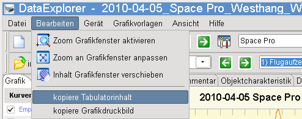
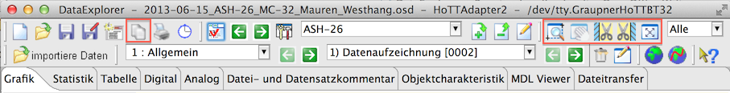
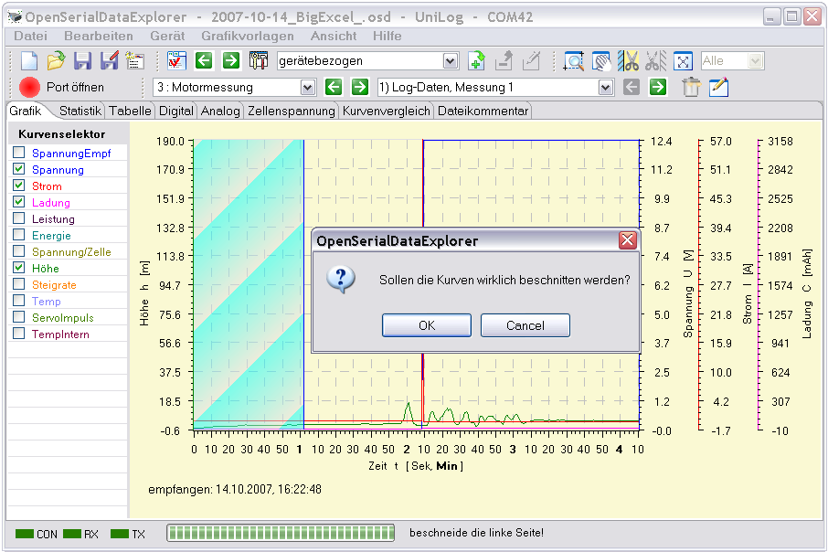

Über dieses Menü kann der Inhalt vom Grafikfenster vergrößert und verschoben werden. 
Hinweis : Kopieren und Ändern der Hintergrundfarbe ist für die meisten Fenster über das Tabulatorfenster eigene Kontextmenü möglich
Die Funktionen, mit der die graphische Ansicht der Kurven verändert werden können sind auch über die Toolbar erreichbar. Hier gibt es zusätzlich noch die Möglichkeit Kurven an den Außenbereichen zu beschneiden oder die Ansicht auf eine Anzahl von letzten aktiven Punkten zu beschränken. In der Toolbar werden die Knöpfe erst aktiviert, wenn diese Operation auch möglich ist.

Das Beispiel zeigt die Positionierung des Bereiches, das nach der Schneideoperation nicht mehr vorhanden sein soll. Ein Dialog fragt nach Bestätigung für die Schneideoperation, die dann eine Kopie des Datensatzes anlegt. Der Benutzer kann selbst entscheiden, den unbeschnittenen Datensatz zu löschen oder zu behalten.

Beschnittene Datensätze bekommen am Ende des Namens einen Unterstrich. Der Originaldatensatz geht dabei nicht verloren.
Hinweis : Datensatznamen können nach drücken des Editierknopfes verändert werden, so wie es hier beschrieben ist.